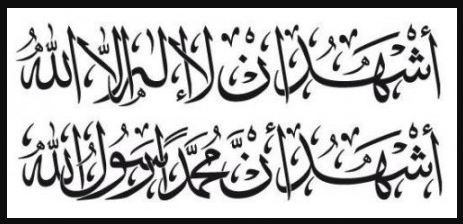

الشهادة
الشهادتان هما الإعلان عن الإيمان من دون شك، وتصريح بأن ليس هناك إله في الوجود إلا الله، وأن محمداً رسول مرسل للناس من الله. نص الشهادة هي: أشهد أن لا إله إلا الله وأشهد أن محمداً رسول الله. وهذا النص يُقال يومياً في صلاة المسلمين، وهو أيضاً المفتاح الرئيسي لدخول شخص غير مسلم في الإسلام.
